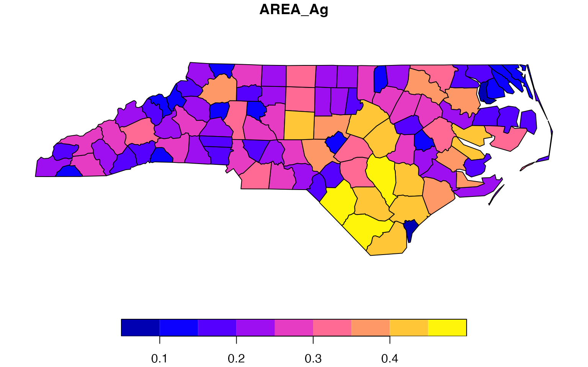

vignettes/collapse_and_sf.Rmd
collapse_and_sf.RmdThis short vignette focuses on using collapse with the popular sf package by Edzer Pebesma. It shows that collapse supports easy manipulation of sf data frames, at computation speeds far above dplyr.
collapse is class-agnostic and can theoretically be used to manipulate any kind of list, matrix or data frame based object. Previous versions of collapse could manipulate sf data frames, but required users to manually include the geometry column when using functions like in fselect and fsubset, and exclude it in other functions like qsu.
Version 1.6.0 of the package adds internal support for sf data frames where the geometry column is handled by most essential functions (fselect, get_vars, num_vars, fsubset, ss, fgroup_by, qsu, descr, varying, funique, roworder, rsplit, fcompute, …). This largely does not affect previously written code where the geometry column is explicitly selected. To demonstrate these features, we can load a test dataset provided by sf:
library(collapse) library(sf) nc <- st_read(system.file("shape/nc.shp", package = "sf"), quiet = TRUE) options(sf_max_print = 3) nc # Simple feature collection with 100 features and 14 fields # geometry type: MULTIPOLYGON # dimension: XY # bbox: xmin: -84.32385 ymin: 33.88199 xmax: -75.45698 ymax: 36.58965 # geographic CRS: NAD27 # First 3 features: # AREA PERIMETER CNTY_ CNTY_ID NAME FIPS FIPSNO CRESS_ID BIR74 SID74 NWBIR74 BIR79 SID79 # 1 0.114 1.442 1825 1825 Ashe 37009 37009 5 1091 1 10 1364 0 # 2 0.061 1.231 1827 1827 Alleghany 37005 37005 3 487 0 10 542 3 # 3 0.143 1.630 1828 1828 Surry 37171 37171 86 3188 5 208 3616 6 # NWBIR79 geometry # 1 19 MULTIPOLYGON (((-81.47276 3... # 2 12 MULTIPOLYGON (((-81.23989 3... # 3 260 MULTIPOLYGON (((-80.45634 3...
The first thing that collapse 1.6.0 adds is summary statistics for sf data frames that automatically exclude the ‘geometry’ column:
# Which columns have at least 2 non-missing distinct values varying(nc) # AREA PERIMETER CNTY_ CNTY_ID NAME FIPS FIPSNO CRESS_ID BIR74 SID74 # TRUE TRUE TRUE TRUE TRUE TRUE TRUE TRUE TRUE TRUE # NWBIR74 BIR79 SID79 NWBIR79 # TRUE TRUE TRUE TRUE # Quick summary stats qsu(nc) # N Mean SD Min Max # AREA 100 0.1263 0.0492 0.042 0.241 # PERIMETER 100 1.673 0.4823 0.999 3.64 # CNTY_ 100 1985.96 106.5166 1825 2241 # CNTY_ID 100 1985.96 106.5166 1825 2241 # NAME 100 - - - - # FIPS 100 - - - - # FIPSNO 100 37100 58.023 37001 37199 # CRESS_ID 100 50.5 29.0115 1 100 # BIR74 100 3299.62 3848.1651 248 21588 # SID74 100 6.67 7.7812 0 44 # NWBIR74 100 1050.81 1432.9117 1 8027 # BIR79 100 4223.92 5179.4582 319 30757 # SID79 100 8.36 9.4319 0 57 # NWBIR79 100 1352.81 1975.9988 3 11631 # Detailed statistics description of each column descr(nc) # Dataset: nc, 14 Variables, N = 100 # ---------------------------------------------------------------------------------------------------- # AREA (numeric): # Stats: # N Ndist Mean SD Min Max Skew Kurt # 100 77 0.13 0.05 0.04 0.24 0.48 2.5 # Quant: # 1% 5% 25% 50% 75% 95% 99% # 0.04 0.06 0.09 0.12 0.15 0.21 0.24 # ---------------------------------------------------------------------------------------------------- # PERIMETER (numeric): # Stats: # N Ndist Mean SD Min Max Skew Kurt # 100 96 1.67 0.48 1 3.64 1.48 5.95 # Quant: # 1% 5% 25% 50% 75% 95% 99% # 1 1.09 1.32 1.61 1.86 2.72 3.2 # ---------------------------------------------------------------------------------------------------- # CNTY_ (numeric): # Stats: # N Ndist Mean SD Min Max Skew Kurt # 100 100 1985.96 106.52 1825 2241 0.26 2.32 # Quant: # 1% 5% 25% 50% 75% 95% 99% # 1826.98 1832.95 1902.25 1982 2067.25 2156.3 2238.03 # ---------------------------------------------------------------------------------------------------- # CNTY_ID (numeric): # Stats: # N Ndist Mean SD Min Max Skew Kurt # 100 100 1985.96 106.52 1825 2241 0.26 2.32 # Quant: # 1% 5% 25% 50% 75% 95% 99% # 1826.98 1832.95 1902.25 1982 2067.25 2156.3 2238.03 # ---------------------------------------------------------------------------------------------------- # NAME (character): # Stats: # N Ndist # 100 100 # Table: # Freq Perc # Alamance 1 1 # Alexander 1 1 # Alleghany 1 1 # Anson 1 1 # Ashe 1 1 # Avery 1 1 # Beaufort 1 1 # --- # Freq Perc # Warren 1 1 # Washington 1 1 # Watauga 1 1 # Wayne 1 1 # Wilkes 1 1 # Wilson 1 1 # Yadkin 1 1 # Yancey 1 1 # # Summary of Table: # Min. 1st Qu. Median Mean 3rd Qu. Max. # 1 1 1 1 1 1 # ---------------------------------------------------------------------------------------------------- # FIPS (character): # Stats: # N Ndist # 100 100 # Table: # Freq Perc # 37001 1 1 # 37003 1 1 # 37005 1 1 # 37007 1 1 # 37009 1 1 # 37011 1 1 # 37013 1 1 # --- # Freq Perc # 37185 1 1 # 37187 1 1 # 37189 1 1 # 37191 1 1 # 37193 1 1 # 37195 1 1 # 37197 1 1 # 37199 1 1 # # Summary of Table: # Min. 1st Qu. Median Mean 3rd Qu. Max. # 1 1 1 1 1 1 # ---------------------------------------------------------------------------------------------------- # FIPSNO (numeric): # Stats: # N Ndist Mean SD Min Max Skew Kurt # 100 100 37100 58.02 37001 37199 -0 1.8 # Quant: # 1% 5% 25% 50% 75% 95% 99% # 37002.98 37010.9 37050.5 37100 37149.5 37189.1 37197.02 # ---------------------------------------------------------------------------------------------------- # CRESS_ID (integer): # Stats: # N Ndist Mean SD Min Max Skew Kurt # 100 100 50.5 29.01 1 100 0 1.8 # Quant: # 1% 5% 25% 50% 75% 95% 99% # 1.99 5.95 25.75 50.5 75.25 95.05 99.01 # ---------------------------------------------------------------------------------------------------- # BIR74 (numeric): # Stats: # N Ndist Mean SD Min Max Skew Kurt # 100 100 3299.62 3848.17 248 21588 2.79 11.79 # Quant: # 1% 5% 25% 50% 75% 95% 99% # 283.64 419.75 1077 2180.5 3936 11193 20378.22 # ---------------------------------------------------------------------------------------------------- # SID74 (numeric): # Stats: # N Ndist Mean SD Min Max Skew Kurt # 100 23 6.67 7.78 0 44 2.44 10.28 # Quant: # 1% 5% 25% 50% 75% 95% 99% # 0 0 2 4 8.25 18.25 38.06 # ---------------------------------------------------------------------------------------------------- # NWBIR74 (numeric): # Stats: # N Ndist Mean SD Min Max Skew Kurt # 100 93 1050.81 1432.91 1 8027 2.83 11.84 # Quant: # 1% 5% 25% 50% 75% 95% 99% # 1 9.95 190 697.5 1168.5 3942.9 7052.84 # ---------------------------------------------------------------------------------------------------- # BIR79 (numeric): # Stats: # N Ndist Mean SD Min Max Skew Kurt # 100 100 4223.92 5179.46 319 30757 2.99 13.1 # Quant: # 1% 5% 25% 50% 75% 95% 99% # 349.69 539.3 1336.25 2636 4889 14707.45 26413.87 # ---------------------------------------------------------------------------------------------------- # SID79 (numeric): # Stats: # N Ndist Mean SD Min Max Skew Kurt # 100 28 8.36 9.43 0 57 2.28 9.88 # Quant: # 1% 5% 25% 50% 75% 95% 99% # 0 0 2 5 10.25 26 38.19 # ---------------------------------------------------------------------------------------------------- # NWBIR79 (numeric): # Stats: # N Ndist Mean SD Min Max Skew Kurt # 100 98 1352.81 1976 3 11631 3.18 14.45 # Quant: # 1% 5% 25% 50% 75% 95% 99% # 3.99 11.9 250.5 874.5 1406.75 5090.5 10624.17 # ----------------------------------------------------------------------------------------------------
We can now also easily select columns from the sf data frame without having to worry about taking along ‘geometry’:
# Selecting a sequence of columns fselect(nc, AREA, NAME:FIPSNO) # Simple feature collection with 100 features and 4 fields # geometry type: MULTIPOLYGON # dimension: XY # bbox: xmin: -84.32385 ymin: 33.88199 xmax: -75.45698 ymax: 36.58965 # geographic CRS: NAD27 # First 3 features: # AREA NAME FIPS FIPSNO geometry # 1 0.114 Ashe 37009 37009 MULTIPOLYGON (((-81.47276 3... # 2 0.061 Alleghany 37005 37005 MULTIPOLYGON (((-81.23989 3... # 3 0.143 Surry 37171 37171 MULTIPOLYGON (((-80.45634 3... # Same using standard evaluation (gv is a shorthand for get_vars()) gv(nc, c("AREA", "NAME", "FIPS", "FIPSNO")) # Simple feature collection with 100 features and 4 fields # geometry type: MULTIPOLYGON # dimension: XY # bbox: xmin: -84.32385 ymin: 33.88199 xmax: -75.45698 ymax: 36.58965 # geographic CRS: NAD27 # First 3 features: # AREA NAME FIPS FIPSNO geometry # 1 0.114 Ashe 37009 37009 MULTIPOLYGON (((-81.47276 3... # 2 0.061 Alleghany 37005 37005 MULTIPOLYGON (((-81.23989 3... # 3 0.143 Surry 37171 37171 MULTIPOLYGON (((-80.45634 3...
The same applies to subsetting rows (and columns):
# A fast and enhanced version of base::subset, now also supporting sf data fsubset(nc, AREA > fmean(AREA), AREA, NAME:FIPSNO) # Simple feature collection with 44 features and 4 fields # geometry type: MULTIPOLYGON # dimension: XY # bbox: xmin: -84.32385 ymin: 33.88199 xmax: -75.45698 ymax: 36.58965 # geographic CRS: NAD27 # First 3 features: # AREA NAME FIPS FIPSNO geometry # 1 0.143 Surry 37171 37171 MULTIPOLYGON (((-80.45634 3... # 2 0.153 Northampton 37131 37131 MULTIPOLYGON (((-77.21767 3... # 3 0.153 Rockingham 37157 37157 MULTIPOLYGON (((-79.53051 3... # A fast version of `[` (where i is used and optionally j) ss(nc, 1:10, c("AREA", "NAME", "FIPS", "FIPSNO")) # Simple feature collection with 10 features and 4 fields # geometry type: MULTIPOLYGON # dimension: XY # bbox: xmin: -84.32385 ymin: 33.88199 xmax: -75.45698 ymax: 36.58965 # geographic CRS: NAD27 # First 3 features: # AREA NAME FIPS FIPSNO geometry # 1 0.114 Ashe 37009 37009 MULTIPOLYGON (((-81.47276 3... # 2 0.061 Alleghany 37005 37005 MULTIPOLYGON (((-81.23989 3... # 3 0.143 Surry 37171 37171 MULTIPOLYGON (((-80.45634 3...
This is significantly faster than using [, dplyr::select or dplyr::filter:
library(microbenchmark) library(dplyr) # Selecting columns microbenchmark(collapse = fselect(nc, AREA, NAME:FIPSNO), dplyr = select(nc, AREA, NAME:FIPSNO), collapse2 = gv(nc, c("AREA", "NAME", "FIPS", "FIPSNO")), sf = nc[c("AREA", "NAME", "FIPS", "FIPSNO")]) # Unit: microseconds # expr min lq mean median uq max neval cld # collapse 10.264 19.189 28.74745 29.0060 32.5765 112.454 100 a # dplyr 2476.227 2692.212 3317.63606 3385.0105 3584.4830 8983.409 100 c # collapse2 7.140 14.726 21.68788 21.6440 24.9900 102.637 100 a # sf 427.951 513.631 634.30979 635.6795 678.7430 1632.373 100 b # Subsetting microbenchmark(collapse = fsubset(nc, AREA > fmean(AREA), AREA, NAME:FIPSNO), dplyr = select(nc, AREA, NAME:FIPSNO) |> filter(AREA > fmean(AREA)), collapse2 = ss(nc, 1:10, c("AREA", "NAME", "FIPS", "FIPSNO")), sf = nc[1:10, c("AREA", "NAME", "FIPS", "FIPSNO")]) # Unit: microseconds # expr min lq mean median uq max neval cld # collapse 36.146 50.8725 73.44371 74.0775 83.4485 209.736 100 a # dplyr 4956.471 5411.6440 6168.26949 5704.1590 6782.9625 12687.709 100 c # collapse2 7.586 13.3880 20.30897 19.8585 24.9905 49.534 100 a # sf 833.591 921.9475 1148.02553 1051.3590 1251.9475 2788.155 100 b
It needs to be noted that at this point collapse functions don’t subset the ‘agr’ attribute on selecting columns, which (if specified) relates columns (attributes) to the geometry, and also don’t modify the ‘bbox’ attribute giving the overall boundaries of a set of geometries when subsetting the sf data frame. Keeping the full ‘agr’ attribute is not problematic for all practical purposes, but not changing ‘bbox’ upon subsetting may lead to too large margins when plotting the geometries of a subsetted sf data frame.
The flexibility and speed of collap for aggregation can be used on sf data frames. A separate method for sf objects was not considered necessary as one can simply aggregate the geometry column using st_union:
# Aggregating by variable SID74 using the median for numeric and the mode for categorical columns collap(nc, ~ SID74, custom = list(fmedian = is.numeric, fmode = is.character, st_union = "geometry")) # or use is.list to fetch the geometry # Simple feature collection with 23 features and 15 fields # geometry type: MULTIPOLYGON # dimension: XY # bbox: xmin: -84.32385 ymin: 33.88199 xmax: -75.45698 ymax: 36.58965 # geographic CRS: NAD27 # First 3 features: # AREA PERIMETER CNTY_ CNTY_ID NAME FIPS FIPSNO CRESS_ID BIR74 SID74 SID74 NWBIR74 BIR79 # 1 0.0780 1.3070 1950.0 1950.0 Alleghany 37005 37073 37.0 487 0 0 40.0 594.0 # 2 0.0810 1.2880 1887.0 1887.0 Ashe 37009 37137 69.0 751 1 1 148.0 899.0 # 3 0.1225 1.6435 1959.5 1959.5 Caswell 37033 37078 39.5 1271 2 2 382.5 1676.5 # SID79 NWBIR79 geometry # 1 1 45 MULTIPOLYGON (((-83.938 34.... # 2 1 176 MULTIPOLYGON (((-77.049 34.... # 3 2 452 MULTIPOLYGON (((-84.29104 3...
sf data frames can also be grouped and then aggregated using fsummarise:
nc |> fgroup_by(SID74) # Simple feature collection with 100 features and 14 fields # geometry type: MULTIPOLYGON # dimension: XY # bbox: xmin: -84.32385 ymin: 33.88199 xmax: -75.45698 ymax: 36.58965 # geographic CRS: NAD27 # First 3 features: # AREA PERIMETER CNTY_ CNTY_ID NAME FIPS FIPSNO CRESS_ID BIR74 SID74 NWBIR74 BIR79 SID79 # 1 0.114 1.442 1825 1825 Ashe 37009 37009 5 1091 1 10 1364 0 # 2 0.061 1.231 1827 1827 Alleghany 37005 37005 3 487 0 10 542 3 # 3 0.143 1.630 1828 1828 Surry 37171 37171 86 3188 5 208 3616 6 # NWBIR79 geometry # 1 19 MULTIPOLYGON (((-81.47276 3... # 2 12 MULTIPOLYGON (((-81.23989 3... # 3 260 MULTIPOLYGON (((-80.45634 3... # # Grouped by: SID74 [23 | 4 (4)] nc |> fgroup_by(SID74) |> fsummarise(AREA_Ag = fsum(AREA), Perimeter_Ag = fmedian(PERIMETER), geometry = st_union(geometry)) # Simple feature collection with 23 features and 3 fields # geometry type: MULTIPOLYGON # dimension: XY # bbox: xmin: -84.32385 ymin: 33.88199 xmax: -75.45698 ymax: 36.58965 # geographic CRS: NAD27 # First 3 features: # SID74 AREA_Ag Perimeter_Ag geometry # 1 0 1.103 1.3070 MULTIPOLYGON (((-83.938 34.... # 2 1 0.914 1.2880 MULTIPOLYGON (((-77.049 34.... # 3 2 1.047 1.6435 MULTIPOLYGON (((-84.29104 3...
It needs to be noted here that typically most of the time in aggregation is consumed by st_union so that the speed of collapse does not really become visible on most datasets. One exception is spatial panel data when aggregating over the time-dimension with identical geometries for each id over time. Such panels can quickly be aggregated using ffirst or flast to aggregate the geometry:
# Creating a panel-dataset by simply duplicating nc for 2 different years pnc <- list(`2000` = nc, `2001` = nc) |> unlist2d("Year") |> copyMostAttrib(nc) pnc # Simple feature collection with 200 features and 15 fields # geometry type: MULTIPOLYGON # dimension: XY # bbox: xmin: -84.32385 ymin: 33.88199 xmax: -75.45698 ymax: 36.58965 # geographic CRS: NAD27 # First 3 features: # Year AREA PERIMETER CNTY_ CNTY_ID NAME FIPS FIPSNO CRESS_ID BIR74 SID74 NWBIR74 BIR79 # 1 2000 0.114 1.442 1825 1825 Ashe 37009 37009 5 1091 1 10 1364 # 2 2000 0.061 1.231 1827 1827 Alleghany 37005 37005 3 487 0 10 542 # 3 2000 0.143 1.630 1828 1828 Surry 37171 37171 86 3188 5 208 3616 # SID79 NWBIR79 geometry # 1 0 19 MULTIPOLYGON (((-81.47276 3... # 2 3 12 MULTIPOLYGON (((-81.23989 3... # 3 6 260 MULTIPOLYGON (((-80.45634 3... # Aggregating by NAME, using the last value for all categorical data collap(pnc, ~ NAME, fmedian, catFUN = flast, cols = -1L) # Simple feature collection with 100 features and 15 fields # geometry type: MULTIPOLYGON # dimension: XY # bbox: xmin: -84.32385 ymin: 33.88199 xmax: -75.45698 ymax: 36.58965 # geographic CRS: NAD27 # First 3 features: # AREA PERIMETER CNTY_ CNTY_ID NAME NAME FIPS FIPSNO CRESS_ID BIR74 SID74 NWBIR74 BIR79 # 1 0.111 1.392 1904 1904 Alamance Alamance 37001 37001 1 4672 13 1243 5767 # 2 0.066 1.070 1950 1950 Alexander Alexander 37003 37003 2 1333 0 128 1683 # 3 0.061 1.231 1827 1827 Alleghany Alleghany 37005 37005 3 487 0 10 542 # SID79 NWBIR79 geometry # 1 11 1397 MULTIPOLYGON (((-79.24619 3... # 2 2 150 MULTIPOLYGON (((-81.10889 3... # 3 3 12 MULTIPOLYGON (((-81.23989 3... # Using fsummarise to aggregate just two variables and the geometry pnc_ag <- pnc |> fgroup_by(NAME) |> fsummarise(AREA_Ag = fsum(AREA), Perimeter_Ag = fmedian(PERIMETER), geometry = flast(geometry)) # The geometry is still valid... plot(slt(pnc_ag, AREA_Ag))

Functions funique and roworder(v) work on sf data frames and ignore the geometry column for determining the unique values / order of rows. rsplit can be used to (recursively) split an sf data frame into multiple chunks.
# Splitting by SID74 rsplit(nc, ~ SID74) |> head(2) # $`0` # Simple feature collection with 13 features and 13 fields # geometry type: MULTIPOLYGON # dimension: XY # bbox: xmin: -84.32385 ymin: 33.88199 xmax: -75.45698 ymax: 36.58965 # geographic CRS: NAD27 # First 3 features: # AREA PERIMETER CNTY_ CNTY_ID NAME FIPS FIPSNO CRESS_ID BIR74 NWBIR74 BIR79 SID79 NWBIR79 # 1 0.061 1.231 1827 1827 Alleghany 37005 37005 3 487 10 542 3 12 # 2 0.062 1.547 1834 1834 Camden 37029 37029 15 286 115 350 2 139 # 3 0.091 1.284 1835 1835 Gates 37073 37073 37 420 254 594 2 371 # geometry # 1 MULTIPOLYGON (((-81.23989 3... # 2 MULTIPOLYGON (((-76.00897 3... # 3 MULTIPOLYGON (((-76.56251 3... # # $`1` # Simple feature collection with 11 features and 13 fields # geometry type: MULTIPOLYGON # dimension: XY # bbox: xmin: -84.32385 ymin: 33.88199 xmax: -75.45698 ymax: 36.58965 # geographic CRS: NAD27 # First 3 features: # AREA PERIMETER CNTY_ CNTY_ID NAME FIPS FIPSNO CRESS_ID BIR74 NWBIR74 BIR79 SID79 NWBIR79 # 1 0.114 1.442 1825 1825 Ashe 37009 37009 5 1091 10 1364 0 19 # 2 0.070 2.968 1831 1831 Currituck 37053 37053 27 508 123 830 2 145 # 3 0.124 1.428 1837 1837 Stokes 37169 37169 85 1612 160 2038 5 176 # geometry # 1 MULTIPOLYGON (((-81.47276 3... # 2 MULTIPOLYGON (((-76.00897 3... # 3 MULTIPOLYGON (((-80.02567 3...
It should be noted here that the default in rsplit for data frames is simplify = TRUE, which for a single LHS variable would just split the column-vector. This does not apply to sf data frames as the ‘geometry’ column is always selected as well.
# Only splitting Area rsplit(nc, AREA ~ SID74) |> head(1) # $`0` # Simple feature collection with 13 features and 1 field # geometry type: MULTIPOLYGON # dimension: XY # bbox: xmin: -84.32385 ymin: 33.88199 xmax: -75.45698 ymax: 36.58965 # geographic CRS: NAD27 # First 3 features: # AREA geometry # 1 0.061 MULTIPOLYGON (((-81.23989 3... # 2 0.062 MULTIPOLYGON (((-76.00897 3... # 3 0.091 MULTIPOLYGON (((-76.56251 3... # For data frames the default simplify = TRUE drops the data frame structure rsplit(qDF(nc), AREA ~ SID74) |> head(1) # $`0` # [1] 0.061 0.062 0.091 0.064 0.059 0.080 0.066 0.099 0.094 0.078 0.131 0.167 0.051
For transforming and computing columns, ftransform(v) and settransform(v) apply as to any other data frame.
ftransform(nc, scaled_AREA = fscale(AREA), gsum_AREA = fsum(AREA, SID74, TRA = "replace_fill")) # Simple feature collection with 100 features and 16 fields # geometry type: MULTIPOLYGON # dimension: XY # bbox: xmin: -84.32385 ymin: 33.88199 xmax: -75.45698 ymax: 36.58965 # geographic CRS: NAD27 # First 3 features: # AREA PERIMETER CNTY_ CNTY_ID NAME FIPS FIPSNO CRESS_ID BIR74 SID74 NWBIR74 BIR79 SID79 # 1 0.114 1.442 1825 1825 Ashe 37009 37009 5 1091 1 10 1364 0 # 2 0.061 1.231 1827 1827 Alleghany 37005 37005 3 487 0 10 542 3 # 3 0.143 1.630 1828 1828 Surry 37171 37171 86 3188 5 208 3616 6 # NWBIR79 geometry scaled_AREA gsum_AREA # 1 19 MULTIPOLYGON (((-81.47276 3... -0.2491860 0.914 # 2 12 MULTIPOLYGON (((-81.23989 3... -1.3264176 1.103 # 3 260 MULTIPOLYGON (((-80.45634 3... 0.3402426 1.380 # settransform materializes the change, same as nc <- ftransform(nc, ...) settransform(nc, scaled_AREA = fscale(AREA), gsum_AREA = fsum(AREA, SID74, TRA = "replace_fill")) nc # Simple feature collection with 100 features and 16 fields # geometry type: MULTIPOLYGON # dimension: XY # bbox: xmin: -84.32385 ymin: 33.88199 xmax: -75.45698 ymax: 36.58965 # geographic CRS: NAD27 # First 3 features: # AREA PERIMETER CNTY_ CNTY_ID NAME FIPS FIPSNO CRESS_ID BIR74 SID74 NWBIR74 BIR79 SID79 # 1 0.114 1.442 1825 1825 Ashe 37009 37009 5 1091 1 10 1364 0 # 2 0.061 1.231 1827 1827 Alleghany 37005 37005 3 487 0 10 542 3 # 3 0.143 1.630 1828 1828 Surry 37171 37171 86 3188 5 208 3616 6 # NWBIR79 geometry scaled_AREA gsum_AREA # 1 19 MULTIPOLYGON (((-81.47276 3... -0.2491860 0.914 # 2 12 MULTIPOLYGON (((-81.23989 3... -1.3264176 1.103 # 3 260 MULTIPOLYGON (((-80.45634 3... 0.3402426 1.380
Special attention to sf data frames is afforded by fcompute, which can be used to compute new columns dropping existing ones - except for the geometry column and any columns selected through the keep argument.
fcompute(nc, scaled_AREA = fscale(AREA), gsum_AREA = fsum(AREA, SID74, TRA = "replace_fill"), keep = .c(AREA, SID74)) # Simple feature collection with 100 features and 4 fields # geometry type: MULTIPOLYGON # dimension: XY # bbox: xmin: -84.32385 ymin: 33.88199 xmax: -75.45698 ymax: 36.58965 # geographic CRS: NAD27 # First 3 features: # AREA SID74 scaled_AREA gsum_AREA geometry # 1 0.114 1 -0.2491860 0.914 MULTIPOLYGON (((-81.47276 3... # 2 0.061 0 -1.3264176 1.103 MULTIPOLYGON (((-81.23989 3... # 3 0.143 5 0.3402426 1.380 MULTIPOLYGON (((-80.45634 3...
The quick converters qDF, qDT and qTBL can be used to very efficiently convert sf data frames to standard data frames, data.table’s or tibbles, and the result can be converted back to the original sf data frame using setAttrib, copyAttrib or copyMostAttrib.
library(data.table) qDT(nc)[, list(roll_AREA = frollmean(AREA, 2), geometry), by = SID74] |> copyMostAttrib(nc) # Simple feature collection with 100 features and 2 fields # geometry type: MULTIPOLYGON # dimension: XY # bbox: xmin: -84.32385 ymin: 33.88199 xmax: -75.45698 ymax: 36.58965 # geographic CRS: NAD27 # First 3 features: # SID74 roll_AREA geometry # 1 1 NA MULTIPOLYGON (((-81.47276 3... # 2 1 0.092 MULTIPOLYGON (((-76.00897 3... # 3 1 0.097 MULTIPOLYGON (((-80.02567 3...